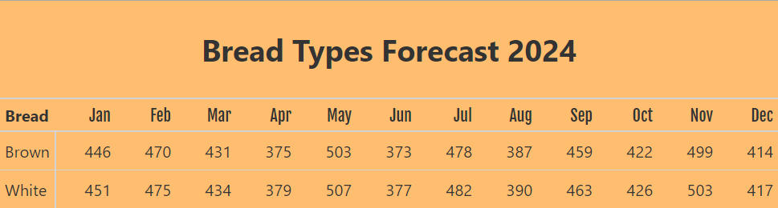

Client: Medium-sized US bakery Tools: Python, Polars, Great Tables
A medium-sized bakery supplies white and brown bread to a major US retail store. Every week, the store sends an Excel file with one forecast number for each month from January to December.
That number doesn’t say how many loaves of each type to make. Splitting it evenly doesn’t work, because in some months the store buys more white bread than brown, and in other months the reverse. The bakery was left to divide the number itself, and it asked Conterval to clean up the forecast data and produce a forecast for each bread type.
We built a repeatable calculation based on the previous year’s sales:

The blog post walks through the code step by step using fictional data, not the bakery’s own figures: How we helped a bakery generate forecast by bread type using polars.